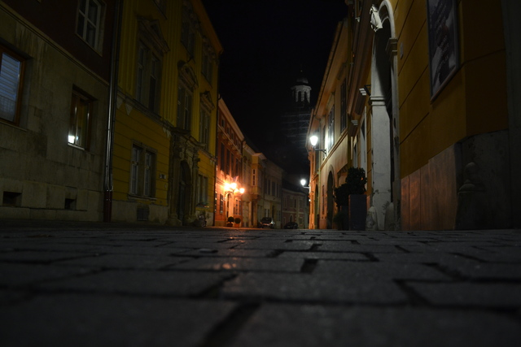
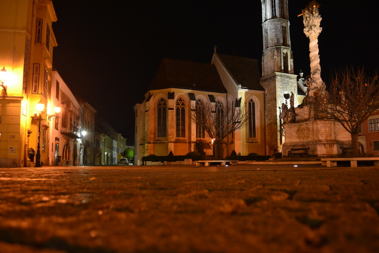
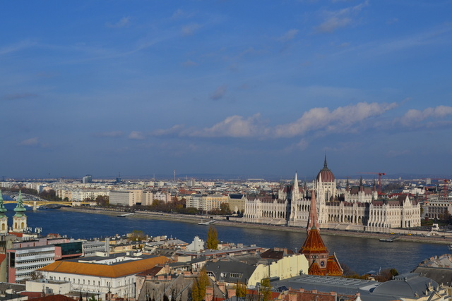
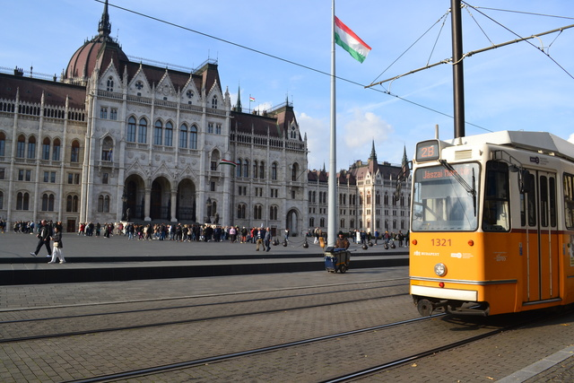
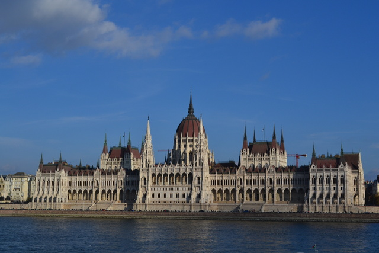
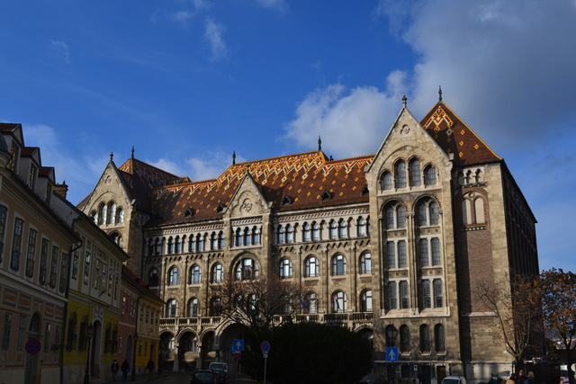

11月は日が暮れるのが早く5時すぎには真っ暗。石畳と教会が街灯に照らされている様子が美しい。


ハンガリーの首都ブダペスト。田舎の村巡りが好きで都市に心惹かれることはあんまりないんですがブダペストはとても良かった。ドナウ川右岸のブダ地区も左岸のペスト地区も、ハンガリーがめぐった歴史の重層性が色濃く感じられる街だった。ナルニア国物語の街灯を思い出した。時を超えていろいろな出来事が交錯する場所に立っている街灯。それと同じように、ブダペストという場所にハンガリー王国、オスマン帝国、ハプスブルク帝国、ソビエトの激動の時代が訪れては去り、それぞれの時代が残した足跡が建築や街並みに刻まれていく。



